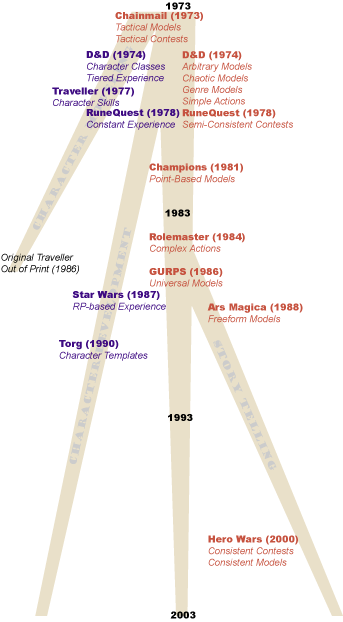

|
A Brief History of Roleplaying, Part Twoby Shannon Appelcline In my last column I began an overview of the history of game design in tabletop roleplaying games. I briefly described it as an evolutionary tree which had three main branches: character modelling, character development, and story telling. After an extensive look at the core trunk of design I then proceeded to discuss the short-lived character modelling branch. This week I want to return briefly to the trunk, to cover some topics I missed, then forge onward with a look at the most successful branch of roleplaying design: character development. Return to the Trunk: Task ResolutionWhen talking about core RPG design last week I covered two major topics: breaking away from tactical modeling; and choosing specific methods for world modeling. This week I want to look at one additional topic which slipped past me: task resolution. Task resolution is the question of how actions are arbitrated within a game. It covers two main categories: actions, wherein a player tries to resolve a task without active interference; and contests wherein a player tries to resolve a task against an active opponent. Here's how these ideas have changed over time: Tactical Contests (1973). In the original Chainmail (1973) we had the already mentioned idea that you were modeling tactical reality. Hand-in-hand with this was the concept that the only contest of note was a tactical one--which is to say, fighting. Even to this day, there are very few games which create complex contest models for other types of interaction. Simple Actions (1974). When D&D (1974) proper was released it introduced the idea of simple task resolution through its thief skills. You tried to engage in an action, such as Pick Lock, and then had to roll a certain number to succeed. This is also the heart of character skills, which we'll see starting with Traveller (1977) and RuneQuest (1978). Semi-Consistent Contests (1978). RuneQuest (1978) was also one of the few early games to accept the possibility that there could be contests which went beyond the bounds of people hitting each other with sharp objects. It include a "Resistance Table" which compared two stats and gave a percentage for success. This table was originally used simply for casting spells on unwilling foes, but the expandability of the core concept soon became very obvious.  Complex Actions (1984). One of the few early games to offer variability and complexity to simple actions was Rolemaster (1984). Rather than a simple success rating, Rolemaster offered percentage success and thus variable results for a large number of "Movement Maneuvers". Again this was one of the few times that considerable attention was paid to non-combat skills. Consistent Contests (2000). Hero Wars (2000) is one of the first games to tie this all together. It offers entirely abstract rules for contests so that players can as easily debate with each other, race, and throw javelins, as they could fight. The Dying Earth (2001), also by the same author, Robin Laws, is one of the few games to follow this trend to date. (Also of note is the fact that Hero Wars was one of the first games to make a clear distinction between simple contests, which consist of a single roll, and complex contests, which involve a long series of rolls.) Although these ideas surrounding task resolution have clearly evolved from one point to another, nothing definitely says that one option is better than the others. Consistent Contests can offer considerable ability for a gamemaster to run just about any type of game, but it is sometimes at the cost of specificity. As always, a gamemaster or game designer neeeds to desire what level of abstraction is optimal for his own game. Branch Two: Character Development GamesThis brings us to the most successful branch of RPGs to date: the character development games, wherein players play continuing characters and improve them as play progresses. It's been occasionally noted that this is a fairly bad model for most genres (e.g., does James Bond get better movie to movie? How about Superman?). Nonetheless, it's got the interest of the roleplaying public, and thus seems to be the general tactic to follow. When examining the evolution of character development games, we can see two main changing trends: character modeling & character advancement. Character Classes, Tiered Experience (1974). As with most ideas in roleplaying, we start with D&D (1974) which outlined the "way things were done" for the first set of games. On the topic of character modeling, we find characters classes, wherein all specific skills and abilities for a character where encapsulated within its class, and there was no opportunity for uniqueness among characters. On the topic of character advancement, we find tiered experience wherein experience tallies were compared against some goal, and upon reaching that goal a character would make major gains in many categories. For the most part these particular evolutionary trends are a dead end. Some games such as Tunnels & Trolls (1975) and Palladium (1983) picked them up and have maintained them, but beyond that the industry seems to have moved on to options that offered more choice and more constant reward. Characters Skills (1977). The idea of modeling characters via individual skills rather than complete, intractable classes was the next big change, and it was brought about by Traveller (1977). The successful release of RuneQuest (1978) the next year, with a similar system, cemented the idea. Today, most RPGs are skill-based and even the old crufty hold-out, D&D, adopted skills to add some flexibility to its class-based systems in AD&D, second edition (1989). Constant Experience (1978). RuneQuest (1978) took the obvious next step by allowing characters to gain experience gradually, through improvement on a skill-by-skill basis. The only reason this was missed by the earlier Traveller (1977) game was that the former had been solidly based in the character modeling branch, and thus had no concept of experience at all. RP-based Experience (1987). As part of the core Tactical Model of RPGs, experience was traditionally based directly upon tactical experience, starting with the earliest days of D&D (1974). Later on games like RuneQuest (1978) added in the idea of experience being based upon use of skills, and Rolemaster (1984) combined both of these into a complex whole, but the basic idea was the same: experience was based on doing things. A newer idea which has slowly infiltrated its way into the game design of RPGs is that experience can also be based on ... well ... good roleplaying. I have a bit of a hard time spotting the start of this trend, because older games claimed that you could give bonuses for RPing, but that clearly wasn't the core of their systems. I'd place one of the earlier uses as Star Wars (1987), which overall had a dramatic, RPing feel, and thus actually supported the gamemaster in arbitrary RP-based experience. (And, if you have comments on earlier uses, I'm happy to hear them.) Overall, it's an idea that appears more strongly in the Storytelling branch of RPGs, where character advancement is deemphasized at least a bit. Some of the newest games such as Dying Earth (2001) create totally unique ways of rewarding RPing (this last one does it by offering experience for the appropriate use of quotes). Template Characters (1990). Class-based characters were very quickly thrown off because of the ways in which they limited player creativity. However, the core concept of being able to easily introduce new players to a game was an intriguing one. Thus, in the early 1990s, a hybrid of classes and skills formed: the template. This was almost entirely a character-creation amenity, wherein a pre-generated character class was put together, suggesting basic skills and backgrounds for a character. One of the earliest games to make it an integral part of its system was Torg (1990). Later it would spread even to existing games, such as Ars Magica, third edition (1992). Some games make the template structure a bit more rigid, such as Hero Wars (2000), which keeps skills categorized as parts of "keywords" which playres bought during character creation. I'll cover an earlier offshoot of this the "Player Organizations" in the Storytelling branch of RPGs, where it appears in Ars Magica (1988) and Vampire: The Masquerade (1991). ConclusionIn many ways, it feels like the character development branch of RPing has slowed down a lot in the last decade, with game designers pretty confident with the current models they have for characters and experience. I believe that's because most of the innovative RPG energy has been going to final branch of RPG design, story telling, which I'll be discussing in full in 2 weeks. See you then. |